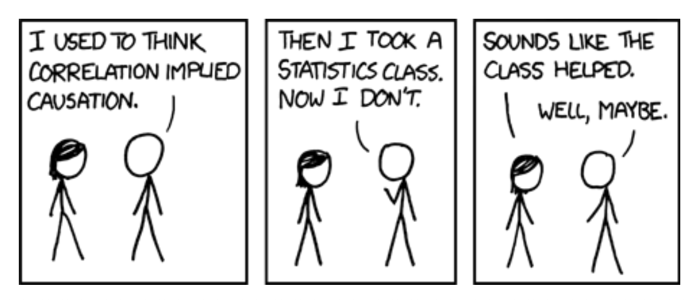
Introduction to Causal Inference
Structural Causal Model (SCM), Markovian Factorization, and d-separation
Structural Causal Models (SCM), Causal Graphs, and Markovian Factorization
관측 데이터로부터 인과 효과를 계산할 수 있는가? (SCM, Truncated Factorization, Adjustment Formula)
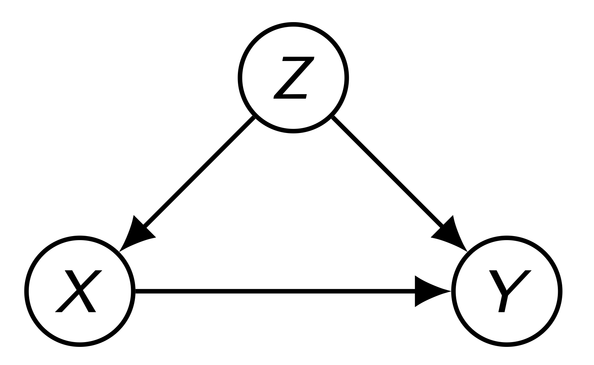
Indentifiable and Non-identifiable Effects
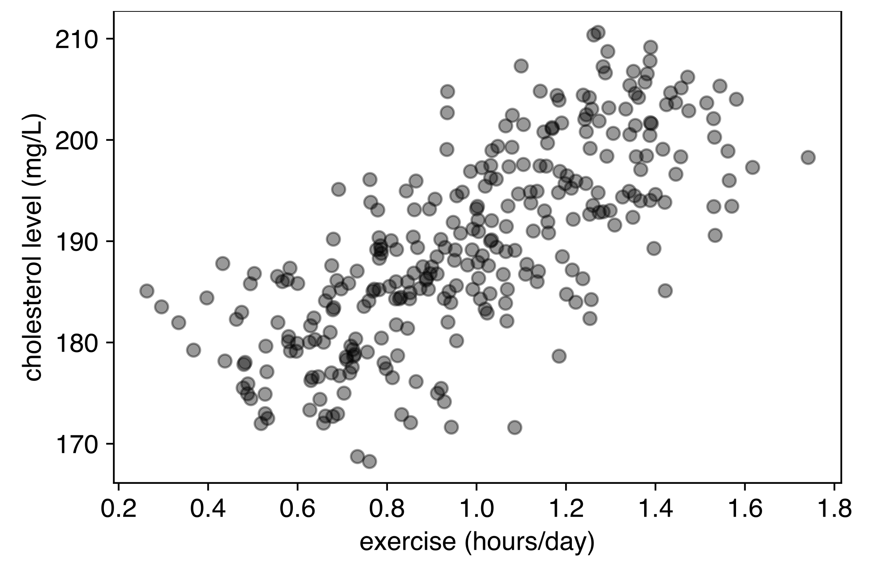
Counfounding Bias
Back-door Criterion
Inverse Probability Weighting
Simpson’s Paradox Simulation Using DoWhy: Stratification & Refutation
DoWhy
Backdoor Criterion - Tightness of the Back-door Criterion
Adjustment Criterion
Algorithm
Conditional Ignorability in Potential Outcome Framework
Three Examples
Identification Approaches & Three Insights
Causal Calculus — A systematic approach for identification
Back to Simpson’s Paradox
Factorizing Observational Distributions
Expressing Causal Queries in terms of C-factors: Examples
A General Approach
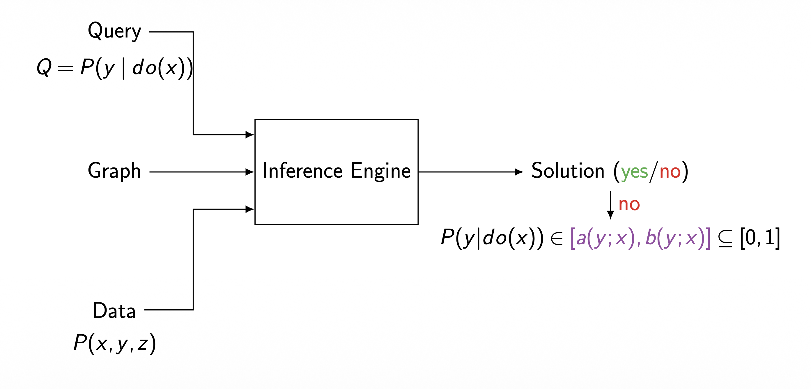
Partial Identification Problem: Natural Bounds
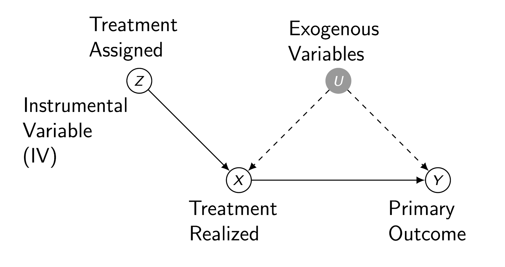
Partial Identification Problem: Non-Compliance
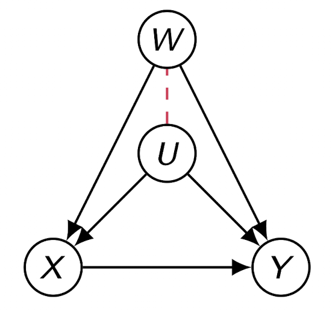
Bounds on Partially-observed Covariates
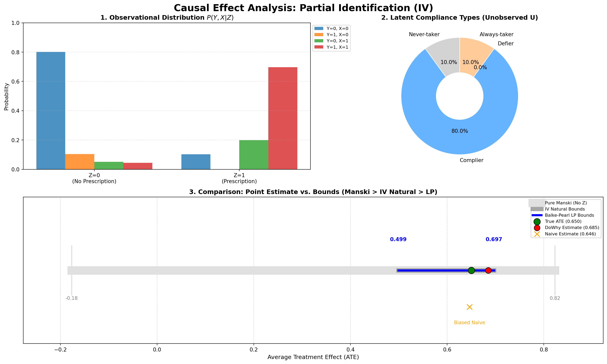
Non-Compliance Simulation
Introduction
Linear Regression
Algorithmic Identification Methods
IV to Instrumental Sets
The Method of Auxiliary Variables
Randomization and Observational Study
Doubly Robust Estimation
일반화 성향점수
Nonparametric Imputation for Causal Inference: Exact, Nearest Neighbor, Propensity Score, and Balance Checking
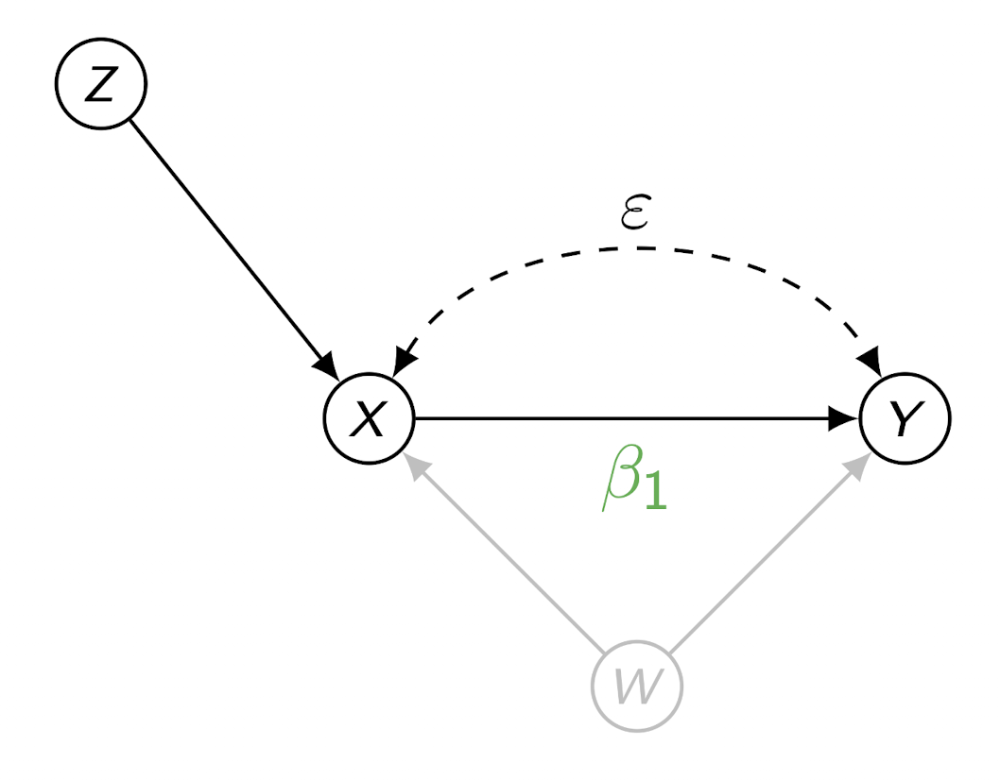
IV under Linear Assumption
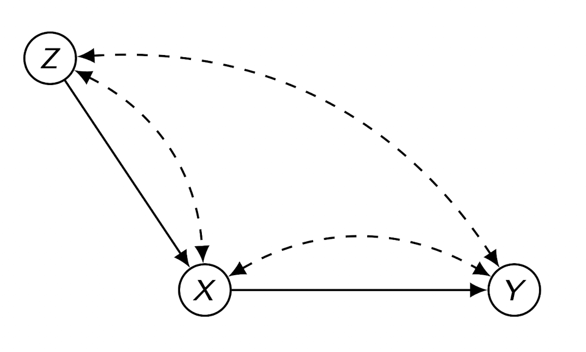
Random Experiment wiht Noncompliance
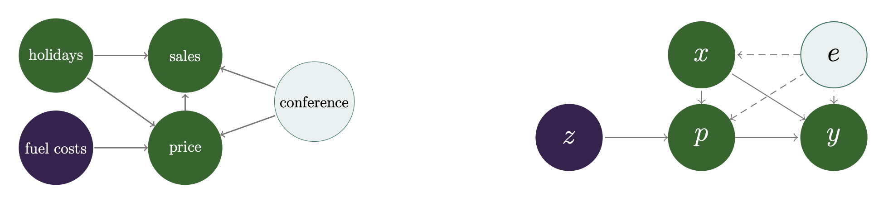
Linear 2SLS vs. Deep IV
Definition, Indentification and Estimation of RDD
Difference in Differences
Nonlinear DiD
Synthetic Control Method
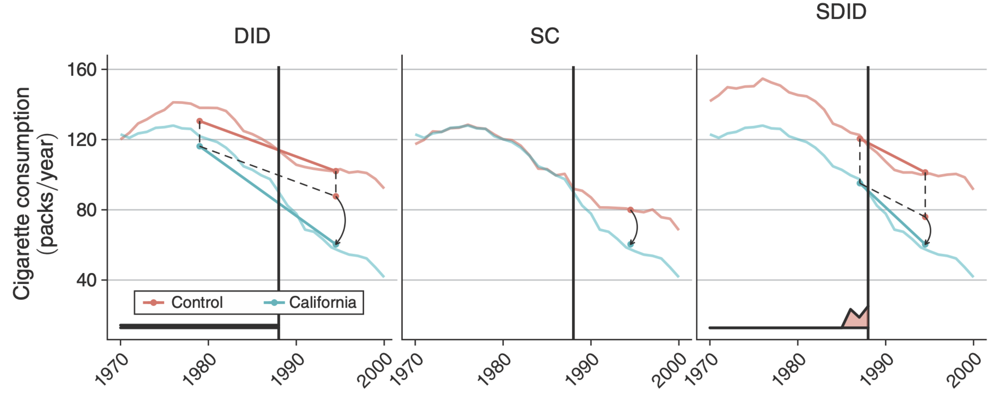
Synthetic Difference-in-Differences
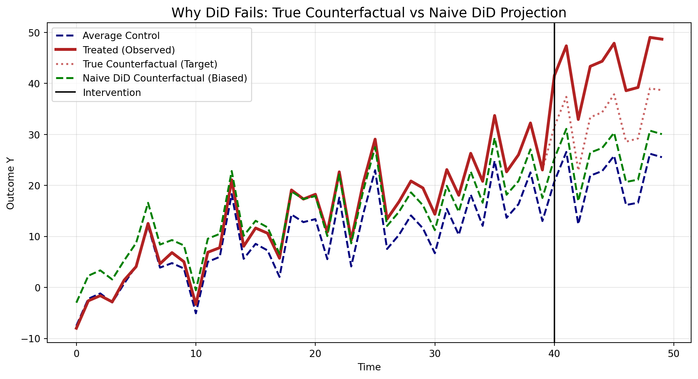
Staggered Difference-in-Differences
Constraint-Based Structure Learning
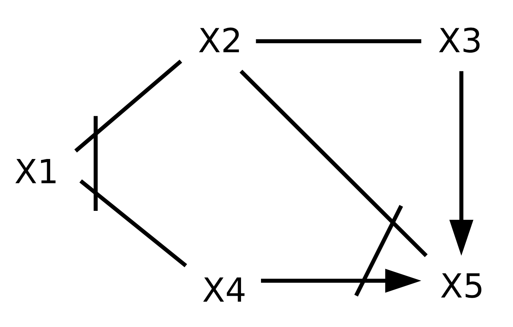
Extensions of PC Algorithm & FCI
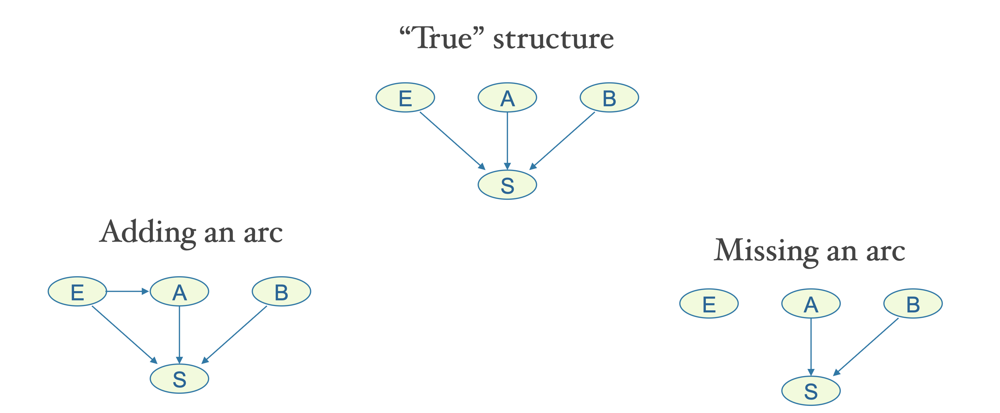
Score-Based Approach
Parametric Approaches
Time Series Causal Discovery
Experimental Conditions - General Identifiability
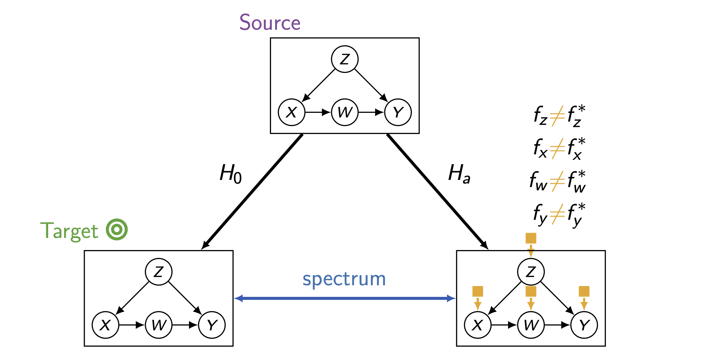
Environmental Conditions - Transportability, External Validity, Meta-Analysis
Sampling Conditions - Recovering From Selection Bias
Missing Data
Measurement
Unifying the Counterfactual and Graphical Approaches to Causality
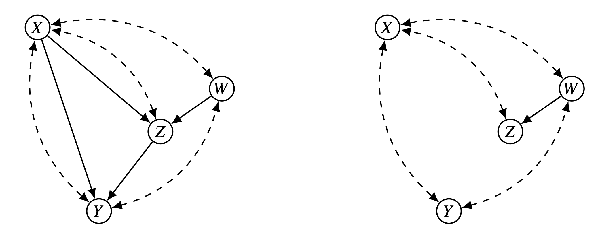
Mathematization
Natural Indirect Effects
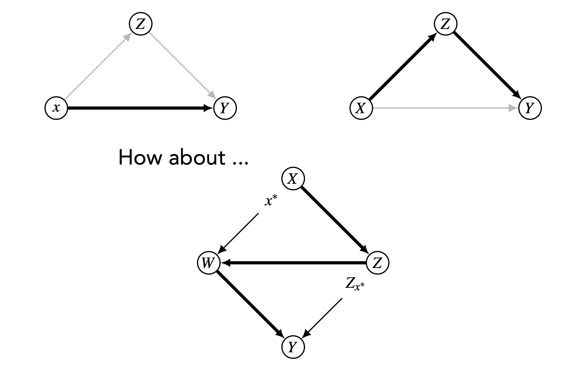
Path-Specific Effects
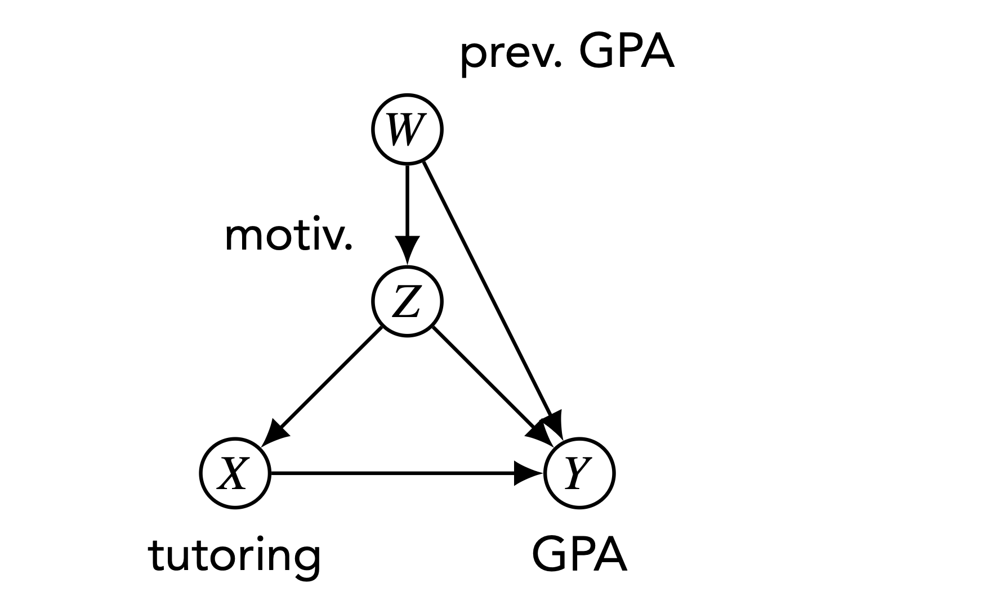
Motivation for Soft-Interventions & Canonical Types of Regimes
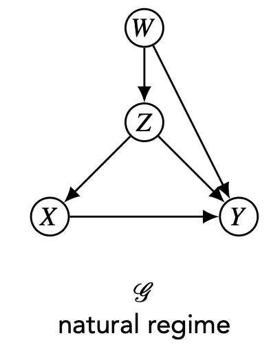
Reduction & σ-calculus
Comparisons to do-calculus
C-Factors and Soft-Intervention
Single Proxy
Double Proxy
Mathematical Optimization
Convex Optimization
Some Standard Convex Sets
Operation That Preserve Convexity
Dimensionality Reduction
Eigenvalues and Eigenpairs
Power Iteration
Principal Component Analysis
Singular Value Decomposition
Dimensionality Reduction with SVD
CUR Decomposition
Recommender Systems
Content-based Recommendation
Collaborative Filtering
The Netflix Challenge
UV Decomposition
UV Decomposition as Machine Learning
Variants of UV Decomposition
Dealing with Implicit Feedback
Distributed Computing for Data Mining
MapReduce: Basics
MapReduce: Details
Overview
Operations
Implementations
Frequent Itemsets
Association Rules
Finding Frequent Pairs
A-Priori Algorithm
PCY Algorithm
Extensions of PCY
Limited-pass Algorithms
Finding Similar Items
Shingling
Minhashing
More on Minhashing
Locality-Sensitive Hashing
S-Curves
LSH Families
LSH with Other Distance Measures
Clustering
Hierarchical Clustering
K-means Clustering
CURE Algorithm
BFR Algorithm
BFR Algorithm: Process
GRGPF Algorithm
Optimization Overview
Classification
Score Functions
Loss Functions
Computational Graphs
Neural Networks
Convolutional Neural Networks
Pooling layer, Activation, Weight initialization
Normalization
Regularization
RNN
LSTM
Attention
Transformer
Combinational Logic
Working with Combinational Logic
Generative Learning Algorithms
Linear Classifier
Feature Representation
Kernel Methods
Support Vector Machines
Generalization and Regularization
Perceptron & Neural Networks
Convex Sets
Convex Functions
First-order and second-order characterizations of convex functions
Strongly Convex Functions
Gradient descent for strongly convex functions
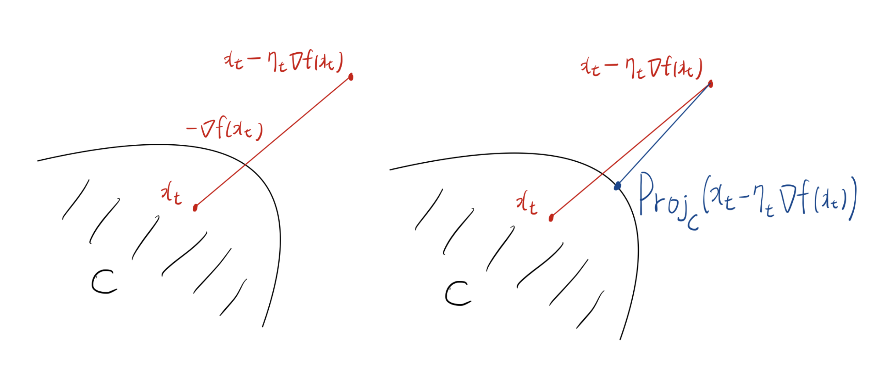
Projected gradient descent
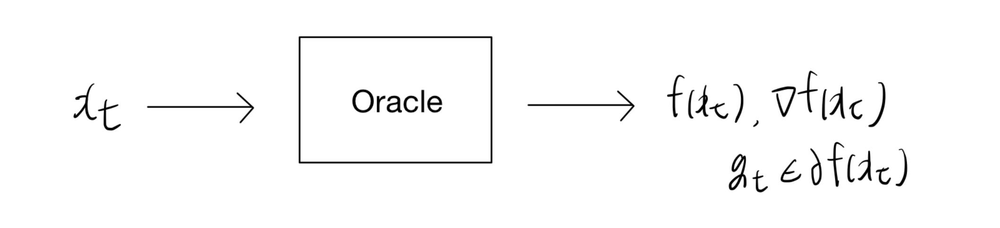
Lower bounds on the iteration complexity of gradient methods
Accelerated gradient method
Projection-free method
Proximal gradient descent
Convergence of proximal gradient descent
Lagrangian Duality
Operations Preserving Convexity
Convex Optimization Problem
Convex Optimization Applications
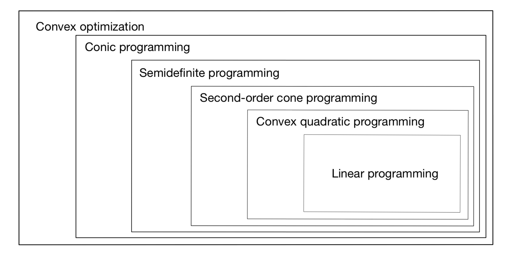
Convex Programming Hierarchy and Linear Programming
Optimization Problems Represented as Linear Programs
Linear programming standard form
Simplex Method
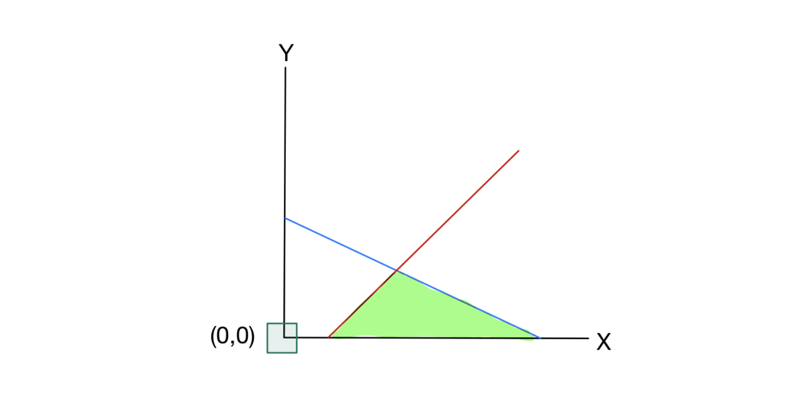
Two-Phase Simplex Algorithm
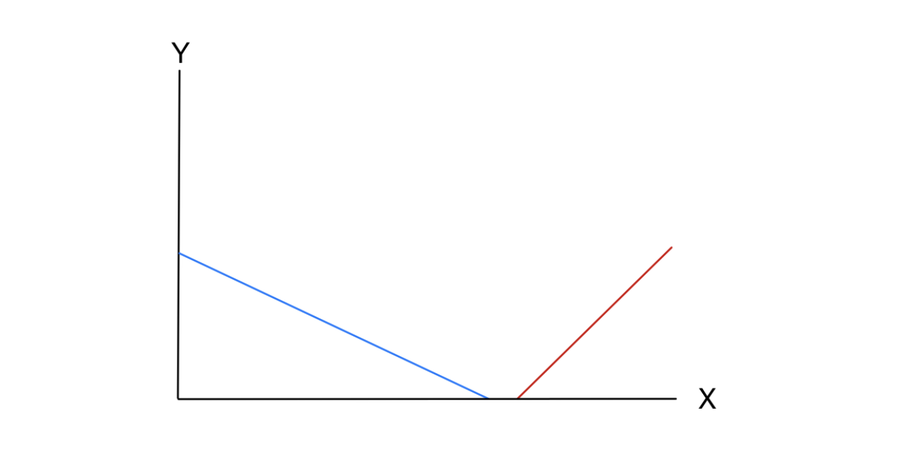
Simplex Method for Infeasible and Unbounded Linear Programs
Simplex Method Phase I Technical Details
Phase II Technical Details
Quadratic Programming
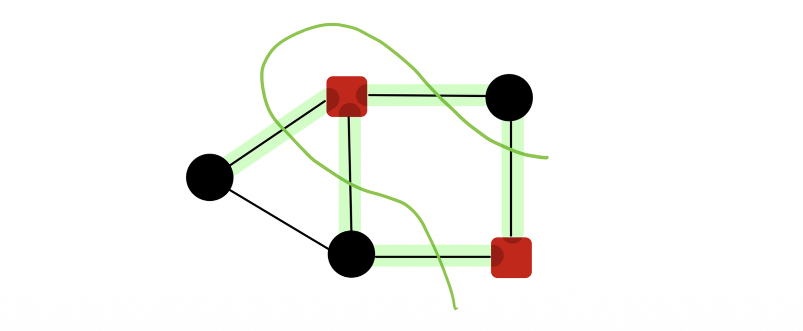
Semidefinite Programming
Conic Programming
Second-order Cone Programming
Conic duality theorem
Optimality conditions for convex minimization
Introduction to gradient descent
Convergence of gradient descent
Convergence of gradient descent for smooth functions
Smooth functions
Causal Inference에서 불확실성을 다루는 새로운 프레임워크: Conformal Prediction과 Meta-learner의 결합
VAE와 GNN을 결합하여 비선형 관계와 다양한 데이터 타입을 포괄하는 새로운 DAG 구조 학습 프레임워크 제안
Philadelphia Beverage Tax 사례를 중심으로: 간섭 하에서의 이중 강건 DiD 추정 방법론
NeurIPS 2018: Time-dependent confounding 해결을 위한 Deep Learning 기반의 RMSN 모델 소개
종단적 데이터에서 시간에 따라 변화하는 치료 및 조절변수의 인과적 효과 분석
고정 처치(Fixed Treatment)를 넘어 시변 처치(Time-Varying Treatment)의 인과 효과를 정의하는 방법과 표기법(History Notation)에 대한 정리
시변 교란요인과 처치 간의 피드백 루프가 형성될 때 발생하는 인과추론의 구조적 문제
시변 처리와 교란요인 피드백 상황에서의 인과 효과 추정
Target Trial Emulation
Hernán & Robins Chapter 23